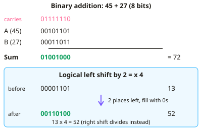

GCSE Computer Science · Topic 8
Further data representation and quantitative skills
Further data representation and quantitative skills builds the calculations that often appear in exams.
We will add binary numbers, use binary shifts, and represent negative numbers with two's complement.
Then we calculate file sizes for text, images and sound, and compress data with run-length encoding and Huffman coding.
- 4 subtopics
- 264 questions
- Free: 8.1 notes and 10 questions
In this topic
- 8.1Binary addition and binary shiftsFree below · 69 questions
- 8.2Representing negative numbers: sign and magnitude, two's complementOpen in Full Marks · 61 questions
- 8.3Calculating file sizes for text, images and sound, and converting unitsOpen in Full Marks · 66 questions
- 8.4Compression in practice: run-length encoding and Huffman codingOpen in Full Marks · 68 questions
8.1 · Free notes
Binary addition and binary shifts

Key points
- Binary addition is done column by column from the right, as in denary. The four rules are 0+0=0, 0+1=1, 1+1=10 (write 0, carry 1) and 1+1+1=11 (write 1, carry 1).
- Always write the carry above the next column on the left, and add it in when you reach that column. A column can contain up to three 1s (two digits plus a carry).
- Worked example: 00101101 (45) + 00011011 (27) = 01001000 (72). Check by converting back to denary, which is a quick way to catch slips.
- Overflow happens when the result needs more bits than the register can hold. For example, in 8 bits, 11001000 (200) + 01100100 (100) = 300, which needs 9 bits. The extra carry is lost and the stored answer, 00101100 (44), is wrong.
- In 8-bit unsigned binary the largest value is 255 (11111111) and the smallest is 0. Any sum above 255 causes overflow.
- A binary shift moves every bit a number of places left or right. In a logical shift the empty places are filled with 0s.
- A left shift by n places multiplies by 2ⁿ. Example: 00001101 (13) shifted left 2 places gives 00110100 (52), which is 13 × 4.
- A right shift by n places performs integer division by 2ⁿ. Example: 01101000 (104) shifted right 3 places gives 00001101 (13). Any remainder is lost, so 00001101 (13) shifted right 1 place gives 00000110 (6), not 6.5.
- Bits shifted off the end are lost. A left shift can give a wrong answer if a 1 is pushed out of the most significant bit, which is a form of overflow. A right shift loses precision.
- Shifts are very fast for a processor to carry out, so they are an efficient way of multiplying or dividing by powers of 2. Exam answers should state the direction, the number of places and the effect on the value.
In more detail
- Worked overflow: 11001000 (200) + 01100100 (100) = 1 00101100; the 9th bit is lost, so 8 bits store 00101100 (44) instead of 300.
- Worked carries: 1 + 1 + 1 = 11 in binary: write 1 and carry 1.
- Worked shifts: 00110101 (53) shifted left 1 → 01101010 (106); shifted right 2 → 00001101 (13, the remainder is lost).
- Worked lost bits: 11000000 (192) shifted left 1 → 10000000 (128), wrong because the leftmost 1 fell off.
Practice
Binary addition and binary shifts: 10 questions
Pick an answer to check it, or open the answer for the explanation.
1. When adding three 1s in one column (two digits plus a carry), what is written and carried?
- Write 1, carry 0
- Write 0, carry 1
- Write 0, carry 0
- Write 1, carry 1
Show answer
D: Write 1, carry 1. 1+1+1 = 3, which is 11 in binary. The right-hand digit 1 is written in the column and the left-hand 1 is carried to the next column.
2. What is 00110101 + 00001110 in binary?
- 00111111
- 01000111
- 01000001
- 01000011
Show answer
D: 01000011. 53 + 14 = 67, which is 01000011. The column working with carries gives this result.
3. An 8-bit register adds 11001000 (200) and 01100100 (100). What happens?
- Overflow; the stored result 00101100 (44) is wrong
- The result 300 is stored correctly
- The result is rounded down to 255
- The result is stored as 00000000
Show answer
A: Overflow; the stored result 00101100 (44) is wrong. The true answer, 300, needs 9 bits. The ninth bit is lost, leaving 00101100 (44). This is an overflow error.
4. What is the denary value of 00000101 after a left shift of 3 places?
- 40
- 20
- 15
- 10
Show answer
A: 40. A left shift of 3 multiplies by 2³ = 8. 5 × 8 = 40, which is 00101000.
5. 01100100 (100) is shifted right by 2 places. What is the result in denary?
- 50
- 200
- 400
- 25
Show answer
D: 25. A right shift of 2 divides by 2² = 4. 100 ÷ 4 = 25, which is 00011001.
6. 00001111 (15) is shifted 1 place to the right. What is the denary result?
- 30
- 7.5
- 7
- 8
Show answer
C: 7. Right shifts give integer division. 00001111 becomes 00000111, which is 7. The remainder bit is lost.
7. Why is 10010011 shifted left 1 place in an 8-bit register not double the original value?
- The leading 1 is shifted out and lost
- Zeros are added on the left
- A left shift only adds 1
- The carry is added back on the right
Show answer
A: The leading 1 is shifted out and lost. The original is 147, and doubling gives 294, which is over 255. The most significant 1 is shifted out, leaving 00100110 (38).
8. Which shift multiplies an unsigned binary number by 16?
- Right shift of 4 places
- Right shift of 16 places
- Left shift of 4 places
- Left shift of 2 places
Show answer
C: Left shift of 4 places. Each place of left shift multiplies by 2. 2⁴ = 16, so 4 places are needed, shifting left.
9. What is 1 + 1 in a single binary column with no incoming carry?
- Write 0 and carry 1
- Write 1 and carry 1
- Write 0 and carry nothing
- Write 2
Show answer
A: Write 0 and carry 1. 1 + 1 = 2, which is 10 in binary. Write 0 in the column and carry 1 to the next column.
10. Add the 5-bit numbers 01101 and 00111. What is the result?
- 01100
- 10010
- 10110
- 10100
Show answer
D: 10100. 13 + 7 = 20, which is 10100 in 5 bits. The carries ripple across three columns.
Keep going in Full Marks
Full Marks has 69 questions on Binary addition and binary shifts (59 more than here), set out in practice levels. You also get notes and 3D models for all 4 subtopics of Further data representation and quantitative skills, plus games, timed exams and past papers.